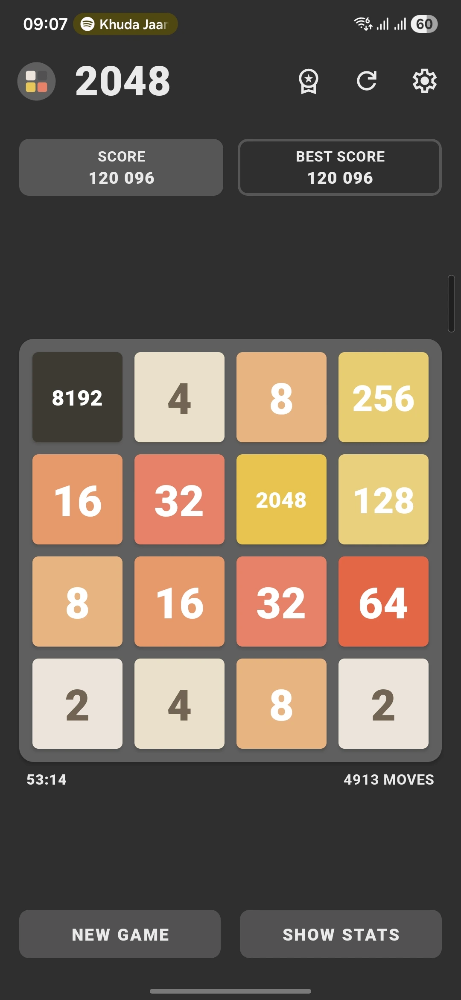
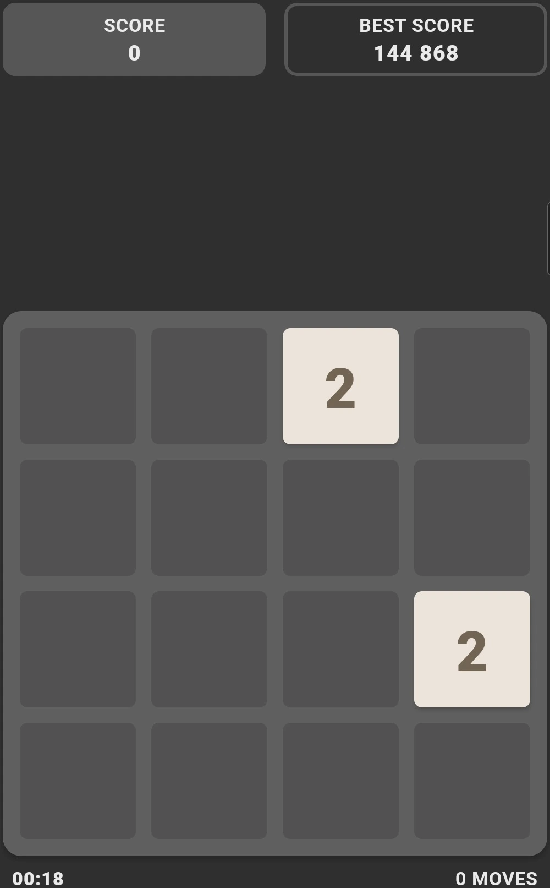

i reached the 8,192 tile in 4,913 moves with a final score of 144,868. playing past 8k by hand requires thousands of consistent moves without a mistake, so i wanted to build an ai system that could play at this level and reach 16,384 and 32,768.

first 8,192 tile (4,913 moves)

high score: 144,868 points
the benchmark to reach: 144,868 points. in version 4, my goal is consistent 8k+ games and reaching 16,384 and 32,768 tiles.
technical notes
engine evolution
version 1: expectimax lookahead backed by a tensorflow.js neural network board evaluator. in-browser inference was heavy (>100ms per move), bottlenecking search tree depth.
version 2: replaced tensorflow.js with a pure javascript matrix engine (<0.03ms). but performance dropped to ~512 average tile -- scalar mse regression lost spatial board topology, and shallow depth 2 lookahead was vulnerable to tactical traps.
version 3: n-tuple network trained via temporal difference learning (td) across 100,000 self-play games on kaggle.
version 4 (current):compiled webassembly bitboard expectimax with 16-bit monotonic row/column score maps, hard perimeter anchor invariants, and 64-bit zobrist transposition caching (>10,000 nodes/sec in-browser lookahead, reaching 16,384 and 32,768 tiles).
compiled webassembly (c): sub-millisecond bitboard search executing millions of evaluations per second in-browser.
16-bit monotonic score maps: 65,536-entry precomputed row and column evaluation tables rewarding monotonic gradients and merge pairs.
hard perimeter anchor invariants: topological protection locking the highest tile to the top-left corner.